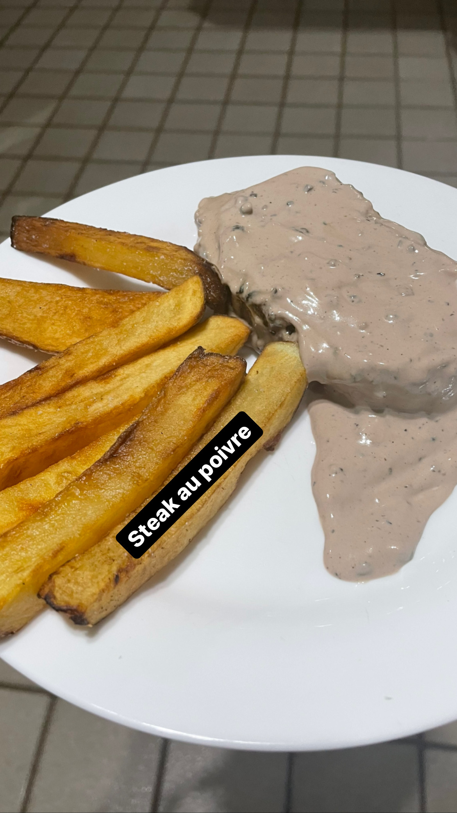

Steak au Poivre

Description
Steak au Poivre is a French recipe that consists of a delicious steak served with a green or black pepper sauce.
A great way to eat it is with french fries.
Ingredients:
- A steak
- Black pepper
- Unsalted Butter
- Brandy
- Salt
- Fresh Milk Cream
Steps:
- First you need to grind the black pepper and cover both sides of the steak with it, then add salt;
- Put butter on a pan and when it's melt and hot place the steak and grill it both sides. When it's done take your steak out of the pan and let it rest aside;
- Now you should deglaze the bottom of your pan with a cup of brandy and let it reduce a bit;
- When it's reduced it's time to add the milk cream, it's important that it's fresh because it's gonna boil. Let it reduce a little more until it have the right consistency of the saude;
- Add grinded black pepper on the sause and season with salt;
- Bring your steak back to the pan and cover it with the sauce;
- Serve it with french fries, ITS DELICIOUS.